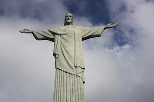
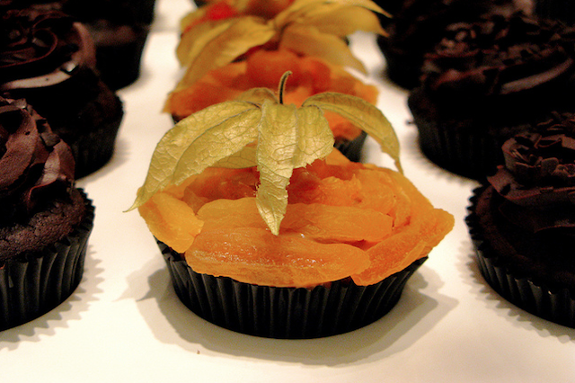
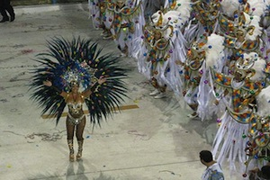

Religion
The vast majority of Brazilians are Roman Catholic. However, as the turn of the 21st century, a large growth in secularism has occurred.
Over the last several years, there has also been a recent rise in evangelical Protestantism.

Learnability
The acceptance of foreigners or outsiders will vary from region to region. In some regions of Brazil the locals have gone out of their way to learn about their Spanish tourists culture. Spanish speaking tourists are greeted with Spanish signs, food they can appreciate, and a welcoming attitude. In other regions if you so much as look like a tourist, you may be charged much higher prices in gas stations and restaurants, you will also find yourself being treated in a rather cool manner by the locals
Culture
Culture of Brazil
Food is a major part of Brazilian culture.

Breakfast is a rather simple affair, generally consisting of milk and bread, sometimes with jam, or ham and cheese.
Lunch is the major meal of the day, usually consisting of beef or chicken and a salad.
Dinner is a light meal of bread, deli meats and cheeses.
Eating out is reserved for the weekends
Churrascaria is a popular type of restaurant that is a bar b que style buffet.
Rice and beans is a constant staple.
Family Dynamic
Brazil is a Patriarchal society, in which family is of the utmost importance. They are generally large families that include aunts, uncles, cousins, grandparents etc. Siblings are very close and will often spend a great deal of their time together outside of the home.
Entertainment
Each year in February Carnival is held in Rio De Janeiro. Carnival is used to mark the beginning of Lent, yet it has it’s roots in a pagan festival of Saturnalia which is an ancient Roman festival to honor the deity of Saturn.
In the 1840’s Carnival became more of a masquerade party with elaborate costumes, dance and music.
Soccer is huge in Brazil, and is known as ‘O Joge Bonito’, which translates to ‘beautiful game. Brazil has made a showing in every World Cup Championship ever held and in 2014 Brazil will be hosting the World Cup. Soccer is played by young and old alike and is considered a national sport. One of the greatest soccer players of all time, in the world, EVER, is Pele, who is also considered to be a national hero.
